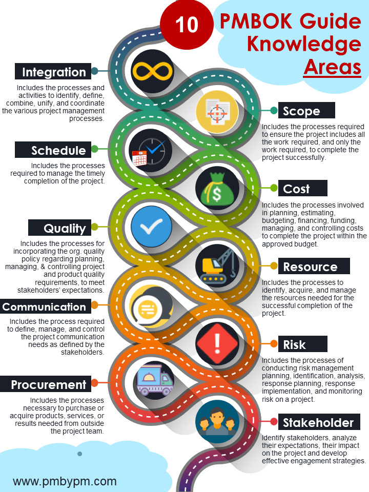
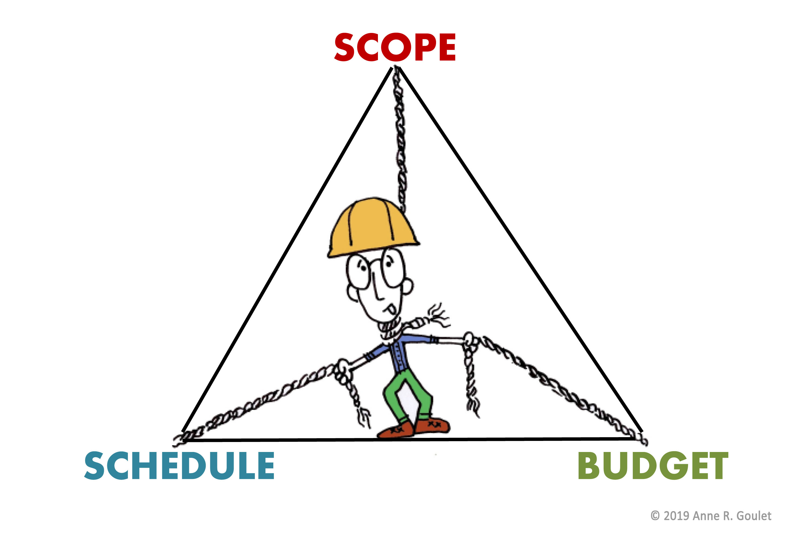

Metodology#
Project management is a complex task, and to deal with that complexity we must follow a methodology.
But which methodology do we choose?
Project management methodologies#
The main project management metodologies, oriented to processes, and which also have certification are the following:
- PMBOK: The most widespread and prestigious.
- PRINCE 2: Mainly in Europe.
- ISO 21500: High similarity with PMBOK.
- CMMI: Broader scope than project management.
- Métrica 3: For the planning, development and maintenance of information systems.
Agile metodologies#
Agile methods are those that try to be very flexible and incorporate the customer in the development.
There are theirs characteristics:
- User collaboration, business people and developers work together.
- Attitude to embrace change.
- Response to changes on top of follow-up of plans.
- Flexible project plan.
- Frequent system deliveries (demos)
- Simplicity is essential.
The most widespread and prestigious is Scrum.
PMBOK knowledge areas#

Project constraints#
The projects are subject to many constraints, many of them contrary. So adding or modifying one of them implies having to modify others as well, and therefore implies a risk.
Any constraints fit in one or a combination of these constraints:
- Scope
- Time
- Cost
They are typically represented in as a triangle.

The project manager tries to meet the expectations of the customer, who is looking for the broader scope, the shortest time and the lowest cost.
As they say: To get all three is impossible, choose two.
Registration#
Project management implies take records of many things:
- Risks.
- Improvement opportunities.
- Tasks and actions.
- Problems, changes requests.
- Errors and improvements.
- Communication and meeting management.
In order to efficiently manage all these tasks, project management tools must be used. There are some of them:
- Microsoft Project / Projectonline
- JIRA (Atlassian)
- Redmine (open-source)
- TFS (Team Foundation Server - Microsoft)
- Trello (Atlassian)
- Slack
- Asana
- GitLab (open-source)
- GitHub